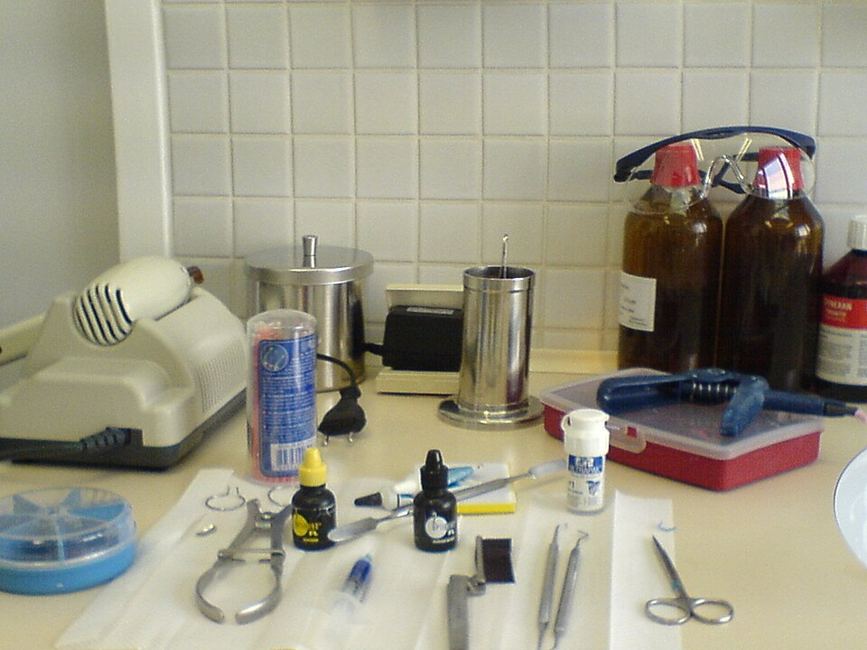
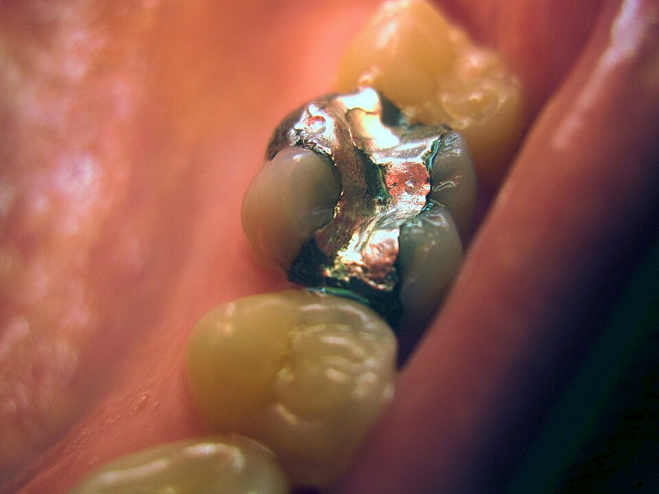
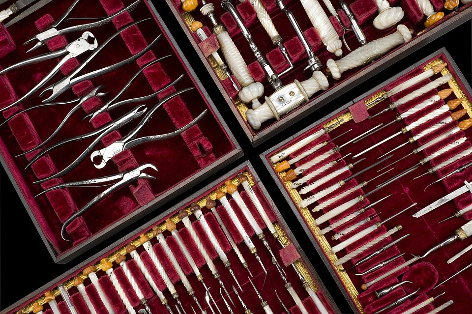
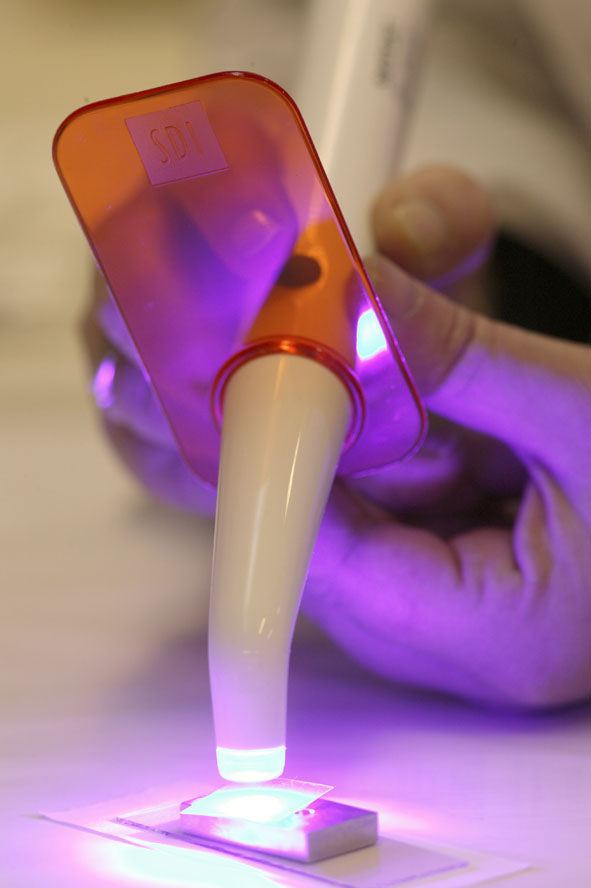
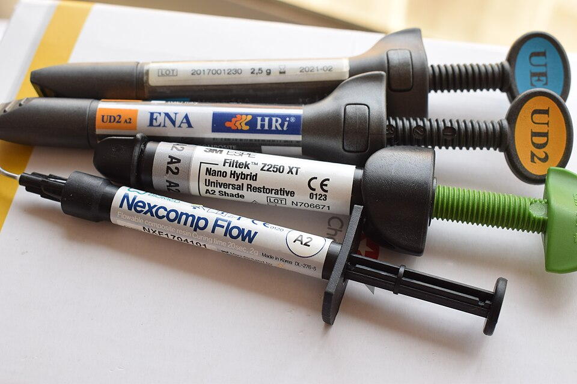
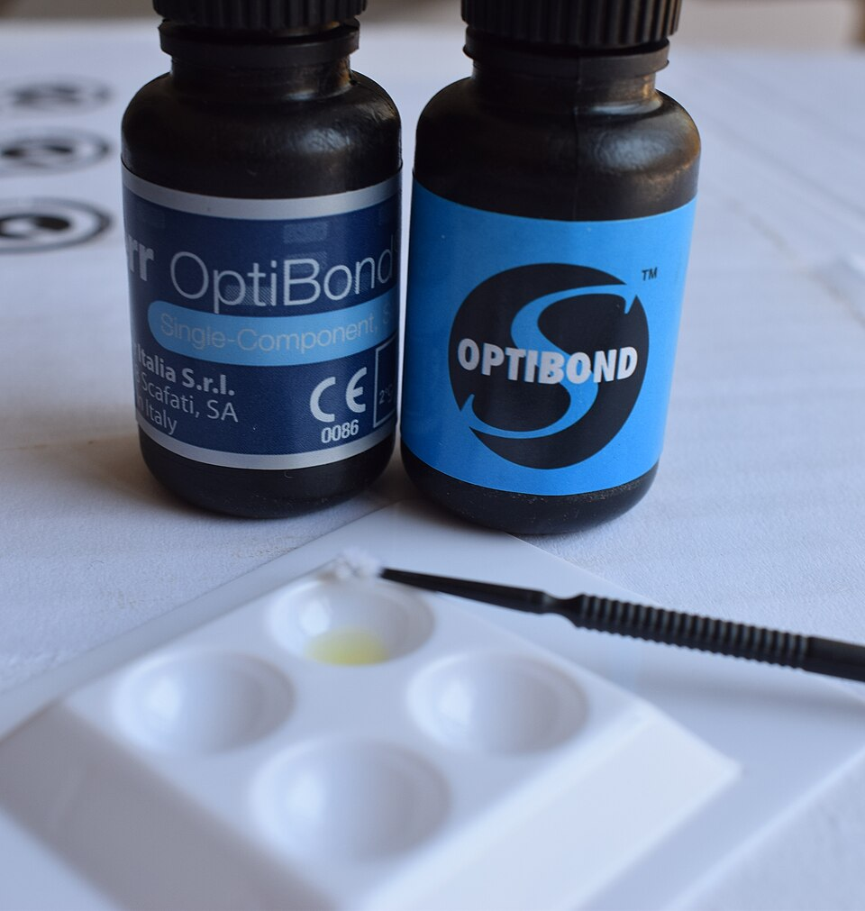
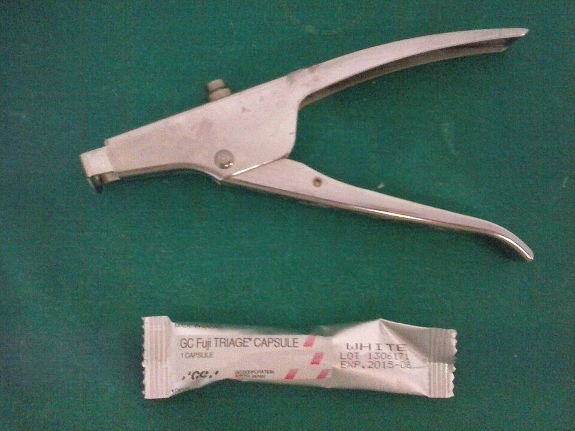

Dental composites and tools
Autor: Mattes. Archivo: materiales.jpg.
Fuente original · CC0 1.0Fotografías reales utilizadas en los menús de flashcards y opción múltiple. Versiones reducidas obtenidas de Wikimedia Commons. La interfaz las recorta visualmente y añade velos oscuros para mejorar el contraste; no se alteró el contenido fotográfico. Cada archivo conserva la licencia indicada. No existe patrocinio de las marcas fotografiadas.

Autor: Mattes. Archivo: materiales.jpg.
Fuente original · CC0 1.0
Autor: Kauzio. Archivo: amalgamas.jpg. Liberada por el autor al dominio público.
Fuente y declaración de dominio público
Wellcome Images / Science Museum. Referencia A75934, fotografía L0057331. Archivo: historia.jpg.
Fuente original · CC BY 4.0
Autor: Niomno. Archivo: fotocurado.jpg.
Fuente original · CC BY 3.0
Autora: Shaimaa Abdellatif, con apoyo de Wikimedia UK. Archivo: composites.jpg. También se utiliza como portada de la materia.
Fuente original · CC BY-SA 4.0
Autora: Shaimaa Abdellatif, con apoyo de Wikimedia UK. Archivo: adhesivos.jpg.
Fuente original · CC BY-SA 4.0
Autora: Isonandra gutta. Archivo: ionomeros.jpg.
Fuente original · CC BY-SA 4.0